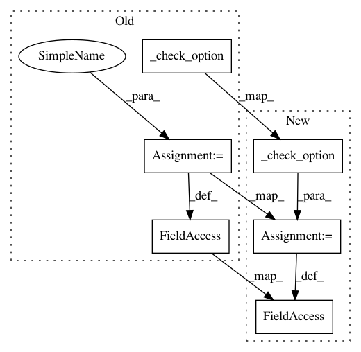

3d8816c0571050aacee8dcb26ebad65a85f590dd,mne/decoding/time_frequency.py,TimeFrequency,__init__,#TimeFrequency#Any#Any#Any#Any#Any#Any#Any#Any#Any#Any#,62
Before Change
self.use_fft = use_fft
self.decim = decim
// Check that output is not an average metric (e.g. ITC)
_check_option("output", output, ["complex", "power", "phase"])
self.output = output
self.n_jobs = n_jobs
self.verbose = verbose
def fit_transform(self, X, y=None):
After Change
self.use_fft = use_fft
self.decim = decim
// Check that output is not an average metric (e.g. ITC)
self.output = _check_option("output", output,
["complex", "power", "phase"])
self.n_jobs = n_jobs
self.verbose = verbose
def fit_transform(self, X, y=None):
In pattern: SUPERPATTERN
Frequency: 3
Non-data size: 6
Instances
Project Name: mne-tools/mne-python
Commit Name: 3d8816c0571050aacee8dcb26ebad65a85f590dd
Time: 2020-10-02
Author: clemens.brunner@gmail.com
File Name: mne/decoding/time_frequency.py
Class Name: TimeFrequency
Method Name: __init__
Project Name: mne-tools/mne-python
Commit Name: 3d8816c0571050aacee8dcb26ebad65a85f590dd
Time: 2020-10-02
Author: clemens.brunner@gmail.com
File Name: mne/decoding/csp.py
Class Name: CSP
Method Name: __init__
Project Name: mne-tools/mne-python
Commit Name: 3d8816c0571050aacee8dcb26ebad65a85f590dd
Time: 2020-10-02
Author: clemens.brunner@gmail.com
File Name: mne/viz/_brain/surface.py
Class Name: Surface
Method Name: __init__